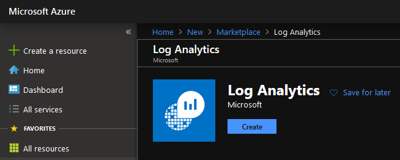
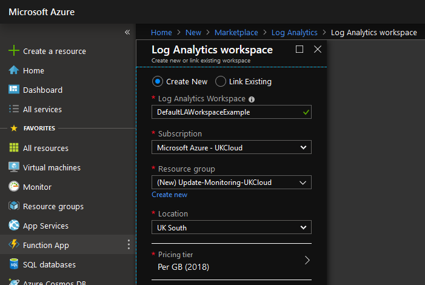
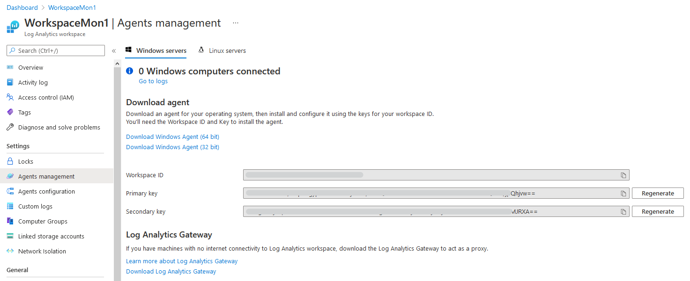
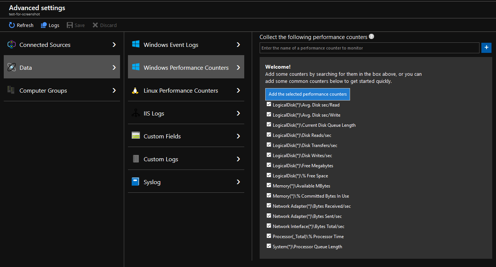
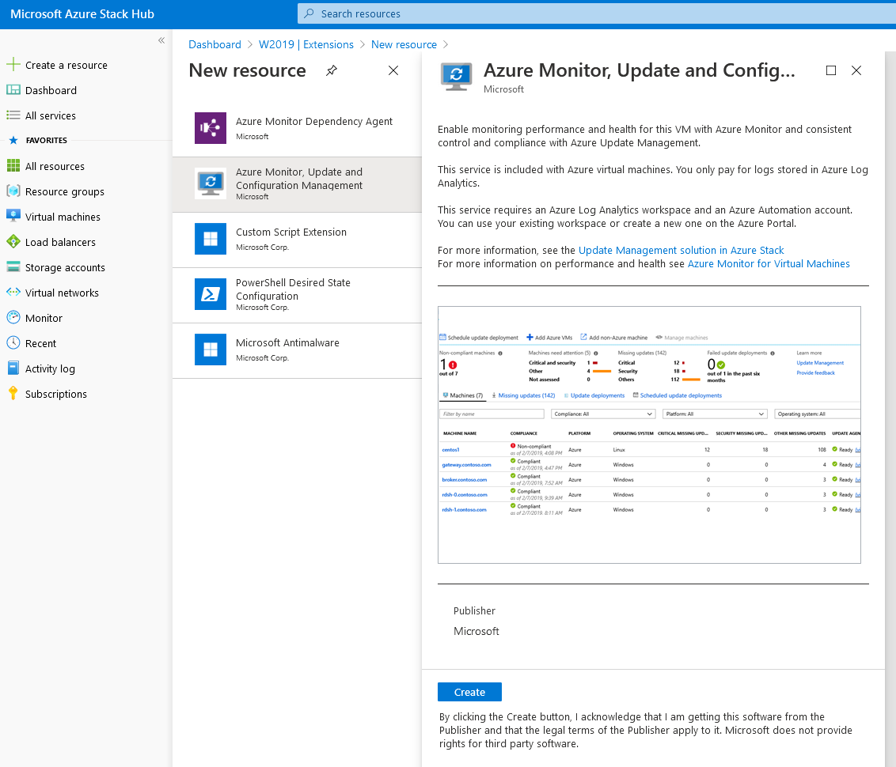
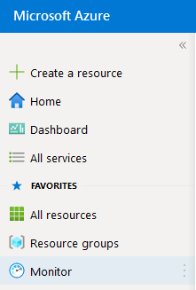
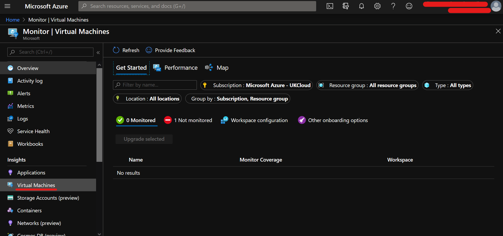
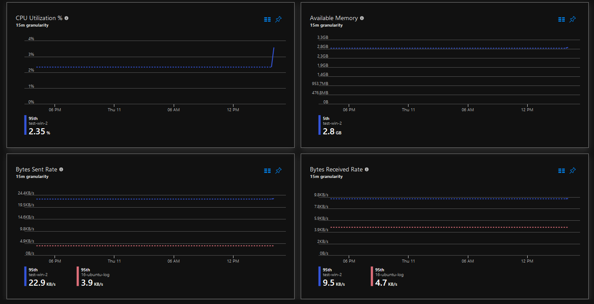
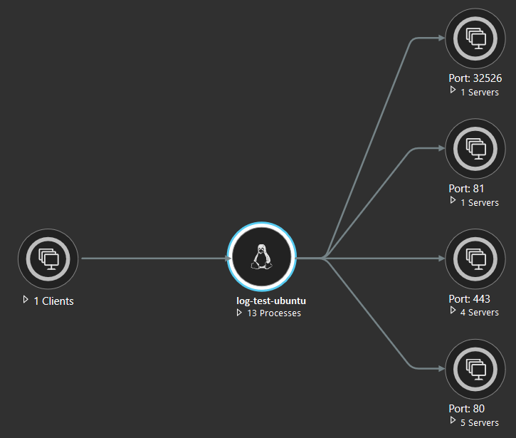

How to configure Azure Monitor for VMs on Azure Stack Hub
Tip
Azure Stack Hub has built-in Azure Monitor capabilities; however, they are limited. Therefore, if you are looking for a more feature rich solution, you should use public Azure Monitor.
You can find out more about Azure Stack Hub's built-in Azure Monitor capabilities in the following article Use Azure Monitor on Azure Stack Hub.
Overview
This article will explain how to utilise public Azure Monitor with Azure Stack Hub and not the built-in Azure Monitor.
Azure Monitor is the platform service that provides a single source for monitoring Azure resources. With Azure Monitor, you can visualise, query, route, archive, and otherwise take action on the metrics and logs coming from resources in Azure.
In this article we will enable the following solutions for Azure Stack Hub VMs:
Prerequisites
To complete the steps in this article, you must have appropriate access to a subscription in the Azure and Azure Stack Hub portal.
Enabling Azure Monitor for VMs
Warning
Before proceeding, check here that your VMs' OS version is supported.
Log in to the public Azure portal.
Create a Log Analytics workspace in your Azure subscription:
Click Create a resource
In the search bar, search for
log analytics
Click Log Analytics
Click Create
Provide the following:
A unique name for the Log Analytics Workspace, for example:
DefaultLAWorkspaceA Subscription to link the workspace to
A Resource group to host the workspace in
A Location to host the workspace in
Note
Azure Monitor for VMs supports a Log Analytics workspace in the these regions.
A Pricing tier to use

The example above shows the blade with all items filled out.
Click OK once finished. The Log Analytics workspace will now begin deploying. A notification will appear in the top right of the portal.
Once deployment is complete, navigate to the resource group you placed the Log Analytics workspace in.
Click the newly created workspace. On the new blade, under Settings, select Advanced settings, then select Windows Servers or Linux Servers depending on the VM type you want to add analytics too. Note down the Workspace ID and Primary Key values.

Within Advanced settings, select the Data blade, and click Windows Performance Counters or Linux Performance Counters
Ensure all counters are selected and click Add the selected performance counters
Note
For Linux performance counters, ensure Apply below configuration to my machines is selected.
Click Save

Log in to the Azure Stack Hub portal.
Navigate to the VM that you want to enable Azure Monitor on and under Settings, select the Extensions blade.
Warning
For any monitoring to work correctly, the VM must have HTTPS (Port 443) enabled in the Network Security Group rules.
Click Add at the top, select the extension Azure Monitor Dependency Agent, click Create and then OK.
Warning
Wait for the deployment to finish before continuing.
Click Add at the top, select the extension Azure Monitor, Update and Configuration Management and then click Create.
Provide the extension with the Workspace ID and Primary Key values (noted down previously).

In public Azure, on the top left, click the hamburger icon and select Monitor.

In the new blade under Insights, click Virtual Machines.
You will see three usage analytics tabs (Get Started, Performance and Map) for the VMs you have enabled Azure Monitor for VMs on.
Caution
The Get Started tab does not show Azure Stack Hub VMs.

At the top, click the Performance tab, then on the right, move the switch from Azure to Hybrid:

A prompt will appear to upgrade the workspace, click Upgrade. In the new blade, click Upgrade again.
Upon refreshing the page, the prompt will disappear and the workspace will begin showing usage analytics for the VMs you have enabled Azure Monitor for VMs on.


Note
It can take between 30 minutes and 6 hours for the dashboard to display updated data from Azure Monitor enabled VMs.
Feedback
If you find a problem with this article, click Improve this Doc to make the change yourself or raise an issue in GitHub. If you have an idea for how we could improve any of our services, send an email to feedback@ukcloud.com.